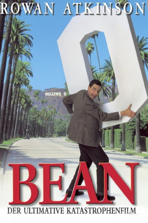

#536 Bean: Der ultimative Katastrophenfilm
Alternativ: Bean
 
 IMDB-Wertung: 6.4 / 10
IMDB-Wertung: 6.4 / 10  Metascore: 52
Metascore: 52 
Die Londoner Royal Gallery wird gebeten, Ihren besten Experten nach Kalifornien zu entsenden, damit dieser die Enthüllung eines kostbaren Gemäldes beaufsichtigt. Aber sie schickt ihren unfähigsten und meistgehassten Angestellten, um ihn endlich loszuwerden. Dieser Angestellte ist natürlich Mr. Bean, der bekannte Unglücksrabe! Innerhalb weniger Tage gelingt es ihm, alles zu zerstören, was auch nur entfernt in seine Nähe kommt, sei dies nun die Karriere und Ehe seines Gastgebers oder das großartigste Gemälde der Vereinigten Staaten. Vergessen Sie Vulkane und Invasionen von Außerirdischen - Bean ist der ultimative Katastrophenfilm!
Jahr: 1997
Dauer: 89 Minuten
FSK: 12
Land: England Studio: PolyGram Filmed EntertainmentTonspuren: DTS - ,
Untertitel: Deutsch,
Auflösung: 1080p (1920x1040) Größe: 7997 MB
Genre: Abenteuer, Komödie, Familie
Regisseur: Mel Smith
Drehbuch: Rowan Atkinson, Richard Curtis, Richard Curtis, Robin Driscoll
Soundtrack: Howard Goodall
Darsteller:
 Rowan Atkinson als Mr. Bean
Rowan Atkinson als Mr. Bean Peter MacNicol als David Langley
Peter MacNicol als David Langley John Mills als Chairman
John Mills als Chairman Pamela Reed als Alison Langley
Pamela Reed als Alison Langley Harris Yulin als George Grierson
Harris Yulin als George Grierson Burt Reynolds als General Newton
Burt Reynolds als General Newton Larry Drake als Elmer
Larry Drake als Elmer Danny Goldring als Security Buck
Danny Goldring als Security Buck Johnny Galecki als Stingo Wheelie
Johnny Galecki als Stingo Wheelie Chris Ellis als Det. Butler
Chris Ellis als Det. Butler- Andrew Lawrence als Kevin Langley
- Peter Egan als Lord Walton
 Peter Capaldi als Gareth
Peter Capaldi als Gareth Rob Brownstein als Dick Journo
Rob Brownstein als Dick Journo Tom McGowan als Walter Merchandise
Tom McGowan als Walter Merchandise Sandra Oh als Bernice Schimmel
Sandra Oh als Bernice Schimmel- Tricia Vessey als Jennifer Langley
 Dakin Matthews als Tucker, Passenger
Dakin Matthews als Tucker, Passenger- Ronnie Yeskel als Mrs. Goodwoman
 Richard Gant als Lt. Brutus
Richard Gant als Lt. Brutus- Richard Hicks als Kart Pusherman
 Robert Curtis Brown als Dr. Frowning
Robert Curtis Brown als Dr. Frowning April Grace als Nurse Pans
April Grace als Nurse Pans- Perry Anzilotti als Dr. Squeaking
- Annette Helde als Nurse Gripes
- June Brown als Delilah
- Peter James als Dr. Rosenblum
- Clive Corner als Dr. Cutler
- Julia Pearlstein als Phyllis Quill
- Alison Goldie als Stewardess Nicely
- Scott Charles als Timmy Pewker Jr
- Thomas Mills als Officer Stubbles
- Priscilla Shanks als Sylvia Grierson
- Gigi Fields als Nurse Desking
- Lela Ivey als Nurse Pots
- David Doty als Dr. Jacobson
- Janni Brenn als Nurse Dyper
- Chris Lowe als Passenger , uncredited
- Louis E. Rosas als Venice Freak , uncredited
- Maridean Mansfield Shepard als LAX Traveler , uncredited
- Teddy als Teddy , uncredited
Datei: X:\2-Dilogie(G-M)\Mr. Bean\Bean Der ultimative Katastrophenfilm (1997, FSK12, 1920x1040).mkv seit 05.03.2015
Festplatte: HD Collection-2(A-Z)-3(A-M)
 Alle Filme aus Gruppe '2-Dilogie(G-M)\Mr. Bean'
Alle Filme aus Gruppe '2-Dilogie(G-M)\Mr. Bean'